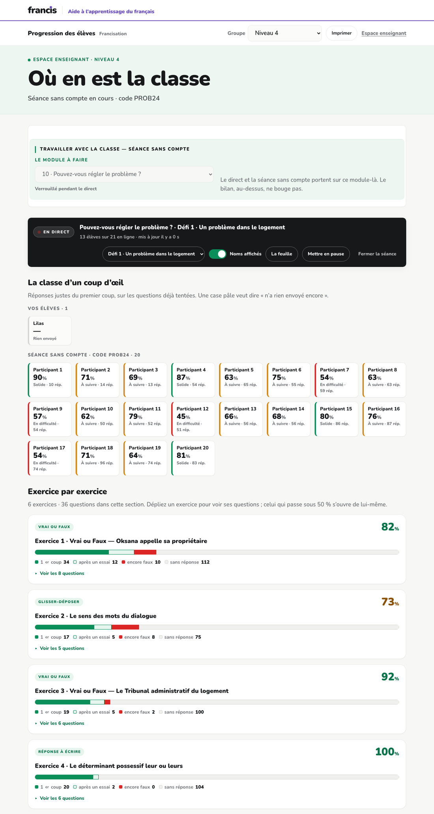
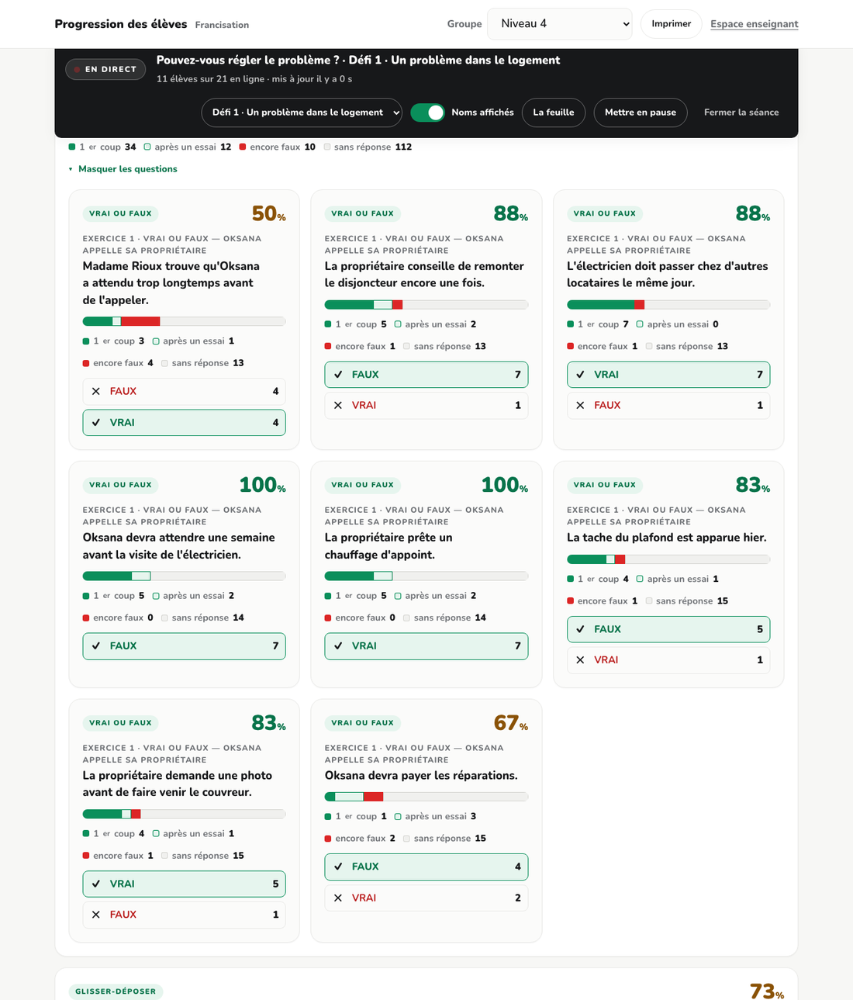

Bibliothèque de francisation · 7 septembre 2026 · pour montrer
Le mode sans compte est le plus difficile à raconter des trois : il n'y a rien à voir avant qu'une classe l'ait utilisé. Cette page donne la classe — vingt appareils entrés avec un code, une heure de travail — et le déroulé de la démonstration.
Une démonstration qui commence par un tableau vide ne démontre rien.
On ne peut pas montrer « rien à créer avant le cours » sur un écran où il n'y a rien.
build/demo_seance.py ouvre une séance et y fait entrer vingt participants
anonymes, avec leurs réponses. Rien n'est un vrai élève, et aucun n'a de
compte — c'est exactement ce qu'on vient montrer.
Sur le poste, dans bibliotheque-francisation :
| Commande | Ce qu'elle fait |
|---|---|
python3 build/demo_seance.py --install |
ouvre la séance PROB24 sur le module 10 du niveau 4 et pose les 1 152 réponses |
python3 build/demo_seance.py --etat |
dit ce qui est posé |
python3 build/demo_seance.py --purge |
retire tout — la séance et ses traces |
Le tableau se regarde dans Progression des élèves, groupe Niveau 4, module 10 · Pouvez-vous régler le problème ? Les chiffres sont semés : la démonstration se répète dix fois sans qu'un chiffre bouge entre deux répétitions.
« Je n'ai rien préparé. Personne dans cette classe n'a de compte. »
« Voilà tout ce que l'élève reçoit. Il scanne, il travaille. »
Quatre solides, douze à suivre, quatre en difficulté — le taux affiché est celui des réponses justes du premier coup, pas des réponses justes. L'élève inscrit au groupe figure au-dessus, séparément : le tableau ne mélange pas ceux qui ont un compte et ceux qui n'en ont pas.

Chaque question porte sa part de réussite, ses essais, et ce que les élèves ont répondu, compté. La première est à 50 % : quatre ont dit VRAI, quatre ont dit FAUX.

Dans ce mode, l'élève s'enregistre et s'écoute : rien ne part. La voix est la donnée la plus identifiante du portail, et l'argument du mode est de ne pas la collecter. Une démonstration qui montrerait des dépôts mentirait sur ce que le mode ramasse — c'est la question qu'une direction posera, et il faut pouvoir y répondre en montrant un écran qui n'en a pas.
Le texte des réponses ouvertes ne monte pas non plus. Le serveur ne le garde que là où une bonne réponse est déclarée — vrai ou faux, glisser-déposer : de la comparaison de chaînes, déjà faite sur l'appareil. Les cases corrigées par l'assistant n'envoient que juste ou faux.
Chaque participant porte une aisance, chaque question une difficulté, et trois questions sont délibérément dures. Sans elles, « ce qui bloque » n'aurait rien à montrer et la démonstration ne dirait pas à quoi le tableau sert. Un premier réglage mettait quatorze cartes sur vingt en rouge : l'écran donnait alors l'impression de montrer une classe qui coule plutôt qu'un instrument qui sert.
La séance vit dans data/seances.json, sur le volume et jamais dans le
dépôt : c'est de la trace, comme data/direct.json.
Les questions et leurs bonnes réponses sont lues dans le module, jamais recopiées : le fichier de contenu est du JavaScript, et le script le fait exécuter plutôt que de le deviner.